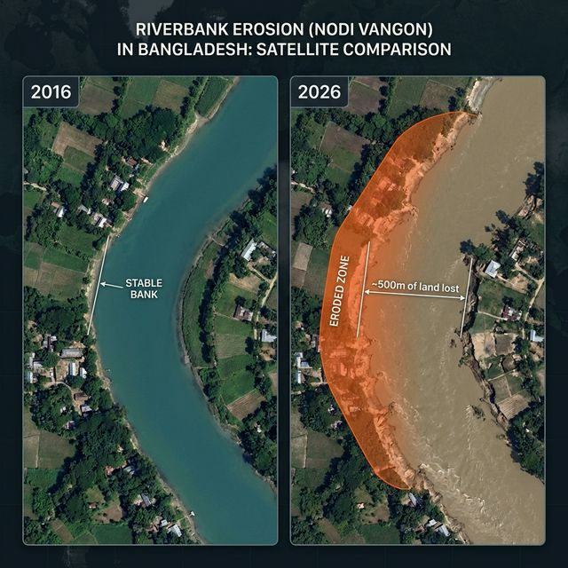

~10,000 hectares vanish yearly, displacing 1 million+ people across 94 upazilas. Sentinel-1 SAR radar works through monsoon clouds for year-round erosion prediction.
~500m of land lost to erosion over 10 years — visible from satellite

Sentinel-1 SAR radar penetrates monsoon clouds (12-day revisit cycle) — critical for Bangladesh's rainy season. When optical satellites are blind, SAR continues monitoring.
Multi-temporal SAR coherence change detection combined with optical NDWI analysis:
Based on Freihardt & Frey (2022), DOI: 10.5281/zenodo.7252970
Immediate relocation needed
6-month warning
Monitor annually
Monsoon-triggered predictions sent 2-4 weeks before expected erosion events: